Approver Dashboards are screens that allow payroll approvers to view start form information, review lists of timecards, compare employee hours to PRs, and prepare timecard batches for transfer to a payroll service.
There are four Approver Dashboards:
· Start Forms Dashboard
· Timecard Review Dashboard
· Gross Payroll Dashboard
· Batch Transfer Dashboard
At the top of each Approver Dashboard are dropdown controls used to select or filter the list of items on the dashboard. Use these controls to filter the list by week ending, department, batch, or even by an individual employee.
Dashboard Filter Controls
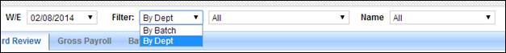
The Start Forms Dashboard displays a list of all of your employee payroll start forms.
Start Forms Dashboard
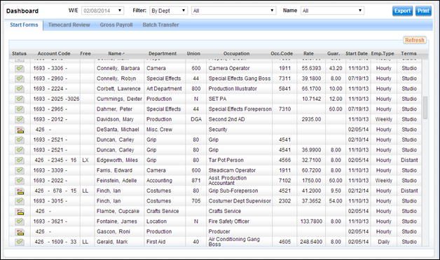
The dashboard contains the following columns:
· Status: This column displays an icon indicating the status of the start form. A green checkmark icon indicates that the start form has been filled out with all required fields. An icon of a form with red marks and a yellow stripe indicates that the form is incomplete.
Incomplete start forms do not generate timecards.
· Account Code: The account code from the start form header. Fields for Major, Detail, Set, and Free are displayed.
· Employee Name: The name of the employee by last name.
· Department: The employee's department.
·
· Occupation: The employee's occupation.
· Occupation Code: The employee's union occupation code, if applicable.
· Rate: The employee's rate. The rate displayed may be the hourly, daily, or weekly rate depending on the employee type.
· Guar.: The number of guaranteed work hours for the employee.
· Start Date: The first day of employment for the employee.
· Employee Type: The employee type - Hourly, Weekly, or Daily.
· Terms: The default employment terms as per the employee's payroll start form. This is either Studio or Distant.
You may sort the data in this table by clicking on any column header.
Click on the Status Icon on any line item to view that employee start form. When done, click on the Return button at the bottom of the start to return to the dashboard.
Select the Print button above the dashboard to create a .pdf copy of a rate sheet based on the information in your employee start forms.
Select the Export button above the dashboard to export the data into an Excel spreadsheet. You may then sort, edit, and manage this information on the spreadsheet.
If any changes to start forms are made while you are viewing this list, you may refresh the view using the Refresh button in the upper right corner of the table. The list will update and display recent changes.
The Timecard Review Dashboard provides a list of crew timecards per week ending. All timecards are listed, including blank timecards not yet filled out by employees. This dashboard is intended to be used by payroll accountants to review the status of timecards as time is recorded and submitted throughout the week. Timecards may be compared with time reported on the week's PRs.
Timecard Review Dashboard
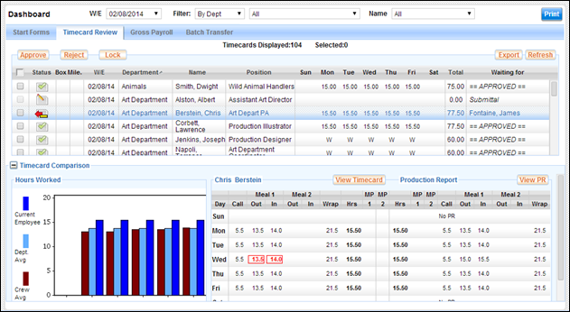
The Timecard Review Dashboard contains charts and tables at the bottom of the screen which instantly compare an employee's submitted time with that of other crew members and with the time reported on that week's production reports.
If you wish to devote the entire screen height to the list of timecards, the bottom section may be compressed by clicking on the [-] button next to the words Timecard Comparison in the upper left corner of that section.
This dashboard contains the following information:
Below the selection controls is the timecard list. This list displays the selected timecards. At the top of the list are buttons to approve, reject, or lock timecards. The Refresh button in the top right refreshes the list.
Timecard List
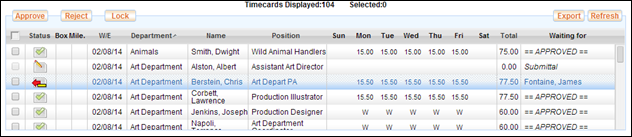
Timecards are displayed in rows with each row containing the following fields:
· Selection Checkbox: Use this checkbox to select a timecard to approve, reject, or lock.
· Status: This column displays an icon indicating the status of the timecard. See the Timecard Status section for detailed descriptions of each status.
· Box: A checkmark indicates if a box or kit rental amount is reported.
· Mileage: A checkmark indicates if the employee submitted mileage.
· W/E (Week Ending): The week ending for the timecard.
· Department: The employee's department.
· Name: The employee's name, last name first.
· Position: The employee's occupation.
· Sun - Sat (Days of the Week): These columns display the number of work hours reported by the employee per day. If the employee is on-call and has reported their time as "Worked", then the letter "W" appears for each work day.
· Total: The total number of hours reported for the week per timecard.
· Waiting for: This column indicates the person who needs to review and approve the timecard next. Unsubmitted timecards display the word "Submittal" and final approved timecards display the word "APPROVED".
Click on a timecard in the list to populate the bar chart and tables at the bottom of the dashboard with information from the selected timecard.
Click on a timecard status icon to view the full timecard.
In the lower left corner of the Timecard Review Dashboard is a bar chart displaying the number of hours worked for the selected employee, per day. Other bars in the chart display the average number of hours worked for other members of the employee's department and the average number of hours worked for the crew as a whole.
Hours Worked Bar Chart
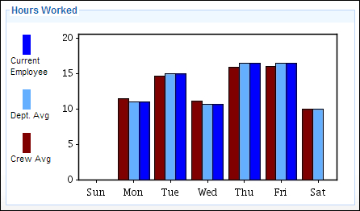
When a timecard is selected from
the list on the Timecard Review Dashboard, a table in the lower right portion
of the screen compares the employee's submitted hours with the hours reported
on the week's production reports.
Timecard Compared with Production Reports
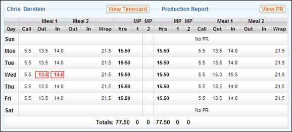
The employee's hours are located on the left side, the production report data on the right side. The week's PRs are aggregated together to create a weekly view, per employee, of the production report data. Therefore, the hours submitted by the employee for Monday are directly compared to the hours reported for the employee from Monday's PR.
Discrepancies between the timecard and the PRs are highlighted in red. A Timecard-PR Discrepancy report may be printed, instantly pinpointing the week's discrepancies.
To view the employee timecard in full, click on the View Timecard button above the employee hours.
To view a production report, click on the View PR button above the production report table.
The Timecard Review Dashboard screen allows you to approve, reject, lock, and print timecards directly from the timecard list.
Use the following steps to approve a timecard from the dashboard. You may approve multiple timecards at once by clicking on multiple checkboxes.
1. Locate the timecard or timecards you wish to approve.
2. Select the checkbox on the far left side of the screen next to the applicable timecard(s).
3. Click the Approve button above the timecard list.
4. Apply your e-signature by entering your Lightspeed password and PIN.
5. The timecard will be sent to the next approver in the approval chain. However, you may select a different approver using the Change Approver checkbox.
6. Click on the E-Sign button to complete the signature.
The timecard is approved.
Use the following steps to reject a timecard from the dashboard. Only one timecard may be rejected in any one rejection action. You may not reject multiple timecards in a single action.
1. Locate the timecard you wish to reject.
2. Select the checkbox on the far left side of the screen next to the applicable timecard.
3. Click the Reject button above the timecard list.
4. Select the individual to whom you are rejecting the timecard.
5. Optionally, enter a comment describing why the timecard was rejected.
6. Click on the Reject button.
The timecard is rejected.
Timecards that have received final approval may be locked. A locked timecard is put into read only mode and may not receive further edits. Once locked, a timecard may not be unlocked.
Use the following steps to lock a timecard from the dashboard. You may lock multiple timecards at once by clicking on multiple checkboxes.
1. Locate the timecard or timecards you wish to lock.
2. Select the checkbox on the far left side of the screen next to the applicable timecard(s).
3. Click the Lock button above the timecard list.
A popup window appears to confirm the lock action.
4. Apply your e-signature by entering your Lightspeed password and PIN.
5. Click on the Lock button to complete the lock.
The timecard is locked.
Timecard printing allows you to generate .pdf copies of timecards, box rental forms, and mileage forms. You may print these from the dashboard using the Print button located in the upper right.
Use the following steps to print one or more timecards.
1. Select a timecard on the dashboard.
2. Click on the Print button in the upper right corner of the screen.
The Print Payroll Documents popup appears.
Print Payroll Documents Popup
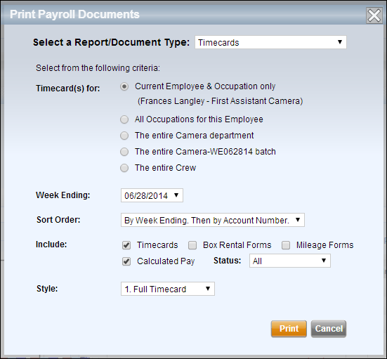
3. Select Timecards from the Document Type dropdown.
4. Select the range of timecards to be printed.
You may select the current employee and occupation, all occupations for the employee, the entire department, batch, or the entire crew.
5. Select a week ending and sort order.
6. Select which information to include in the print job.
· Timecards
· Box Rental Forms
· Mileage Forms
· Calculated Pay, which includes payroll hours to gross detail on the printed timecards
· Status - Use this dropdown to print only timecards of a certain status (Submitted, Approved, or Void)
7. If you've selected Timecards, select a timecard style from the Style dropdown.
· Full Timecards
· Job Breakdown
· Simple Timecard
8. Click on the Print button.
The documents are printed as a .pdf.
A weekly Timecard-PR Discrepancy report may be printed from the Timecard Review Dashboard. This report lists all timecards that have a discrepancy with the week's set of production reports.
Use the following steps to print one or more timecards.
1. Click on the Print button in the upper right corner of the screen.
The Print Payroll Documents popup appears.
Print Payroll Documents Popup
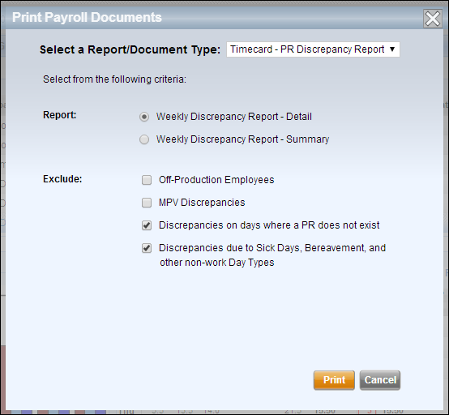
2. Select Timecard-PR Discrepancy Report from the Document Type dropdown.
3. Select the report type: Detail or Summary.
The Detail report will include all reported hours per timecard on the discrepancy report, with discrepancies highlighted.
The Summary report displays a list of timecards with discrepancies.
4. Select any exclusions.
You may choose to exclude the following:
· Off-Production Employees
· Discrepancies due to MPV counts on the PR
· Discrepancies for days where a PR was not created
· Discrepancies due to non-work days such as sick or bereavement days
5. Click on the Print button.
The report is printed as a .pdf.
The Gross Payroll Dashboard displays a list of crew timecards focusing on the gross pay amount of each timecard. All timecards are listed, including blank timecards not yet filled out or submitted. This dashboard is intended to be used by people responsible for reviewing and approving timecards after the employee hours have been converted to a gross pay amount.
Gross Payroll Dashboard
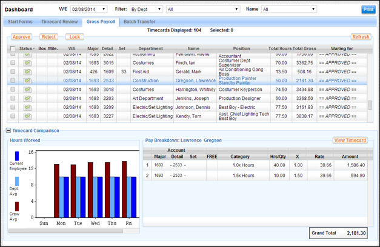
The Timecard Review Dashboard contains a bar chart and Pay Breakdown table at the bottom of the screen. The chart compares an employee's submitted time with that of their peers, and the Pay Breakdown table summarizes the pay line items from each timecard.
If you wish to devote the entire screen height to the list of timecards, the bottom section may be compressed by clicking on the [-] button next to the words Timecard Comparison in the upper left corner of that section.
This dashboard contains the following information:
Below the selection controls is the timecard list. This list displays the selected timecards. At the top of the list are buttons to approve, reject, or lock timecards. The Refresh button in the top right refreshes the list.
Timecard List
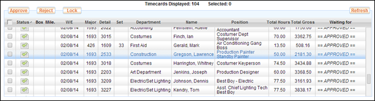
Timecards are displayed in rows with each row containing the following fields:
· Selection Checkbox: Use this checkbox to select a timecard to approve, reject, or lock.
· Status: This column displays an icon indicating the status of the timecard. See the Timecard Status section for detailed descriptions of each status.
· Box: A checkmark indicates if a box or kit rental amount is reported.
· Mileage: A checkmark indicates if the employee submitted mileage.
· W/E (Week Ending): The week ending for the timecard.
· Account Code Columns: Individual columns for the three main parts of the timecard's Account Code - Major, Detail, and Set.
· Department: The employee's department.
· Name: The employee's name, last name first.
· Position: The employee's occupation.
· Total Hours: The total number of work hours reported on the timecard.
· Total Gross: The gross pay amount for the timecard.
· Waiting for: This column indicates the person who needs to review and approve the timecard next. Unsubmitted timecards display the word "Submittal" and final approved timecards display the word "APPROVED".
Click on a timecard in the list to populate the bar chart and Pay Breakdown table at the bottom of the dashboard with information from the selected timecard.
Click on a timecard status icon to view the full timecard.
In the lower left corner of the Timecard Review Dashboard is a bar chart displaying the number of hours worked for the selected employee, per day. Other bars in the chart display the average number of hours worked for other members of the employee's department and the average number of hours worked for the crew as a whole.
Hours Worked Bar Chart
The Pay Breakdown summary table
displays the Pay Breakdown for the selected timecard, with grand total. This is
the same Pay Breakdown found on the timecard itself. This allows the Approver
to review the line items that make up the timecard's grand total without having
to open each timecard.
Pay Breakdown Summary
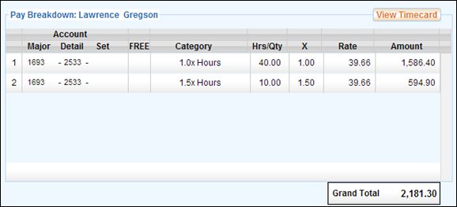
The Gross Payroll Dashboard screen allows you to approve, reject, lock, and print timecards directly from the timecard list.
Use the following steps to approve a timecard from the dashboard. You may approve multiple timecards at once by clicking on multiple checkboxes.
1. Locate the timecard or timecards you wish to approve.
2. Select the checkbox on the far left side of the screen next to the applicable timecard(s).
3. Click the Approve button above the timecard list.
4. Apply your e-signature by entering your Lightspeed password and PIN.
5. The timecard will be sent to the next approver in the approval chain. However, you may select a different approver using the Change Approver checkbox.
6. Click on the E-Sign button to complete the signature.
The timecard is approved.
Use the following steps to reject a timecard from the dashboard. Only one timecard may be rejected in any one rejection action. You may not reject multiple timecards in a single action.
1. Locate the timecard you wish to reject.
2. Select the checkbox on the far left side of the screen next to the applicable timecard.
3. Click the Reject button above the timecard list.
4. Select the individual to whom you are rejecting the timecard.
5. Optionally, enter a comment describing why the timecard was rejected.
6. Click on the Reject button.
The timecard is rejected.
Timecards that have received final approval may be locked. A locked timecard is put into read only mode and may not receive further edits.
Use the following steps to lock a timecard from the dashboard. You may lock multiple timecards at once by clicking on multiple checkboxes.
1. Locate the timecard or timecards you wish to lock.
2. Select the checkbox on the far left side of the screen next to the applicable timecard(s).
3. Click the Lock button above the timecard list.
A popup window appears to confirm the lock action.
4. Apply your e-signature by entering your Lightspeed password and PIN.
5. Click on the Lock button to complete the lock.
The timecard is locked.
Timecard printing allows you to generate .pdf copies of timecards, box rental forms, and mileage forms. You may print these from the dashboard using the Print button located in the upper right.
Use the following steps to print one or more timecards.
1. Select a timecard on the dashboard.
2. Click on the Print button in the upper right corner of the screen.
The Print Payroll Documents popup appears.
Print Payroll Documents Popup
3. Select Timecards from the Document Type dropdown.
4. Select the range of timecards to be printed.
You may select the current employee and occupation, all occupations for the employee, the entire department, batch, or the entire crew.
5. Select a week ending and sort order.
6. Select which information to include in the print job.
· Timecards
· Box Rental Forms
· Mileage Forms
· Calculated Pay, which includes payroll hours to gross detail on the printed timecards
· Status - Use this dropdown to print only timecards of a certain status (Submitted, Approved, or Void)
7. If you've selected Timecards, select a timecard style from the Style dropdown.
· Full Timecards
· Job Breakdown
· Simple Timecard
8. Click on the Print button.
The documents are printed as a .pdf.
A weekly Timecard-PR Discrepancy report may be printed from the Gross Payroll Dashboard. This report lists all timecards that have a discrepancy with the week's set of production reports.
Use the following steps to print one or more timecards.
1. Click on the Print button in the upper right corner of the screen.
The Print Payroll Documents popup appears.
Print Payroll Documents Popup
2. Select Timecard-PR Discrepancy Report from the Document Type dropdown.
3. Select the report type: Detail or Summary.
The Detail report will include all reported hours per timecard on the discrepancy report, with discrepancies highlighted.
The Summary report displays a list of timecards with discrepancies.
4. Select any exclusions.
You may choose to exclude the following:
· Off-Production Employees
· Discrepancies due to MPV counts on the PR
· Discrepancies for days where a PR was not created
· Discrepancies due to non-work days such as sick or bereavement days
5. Click on the Print button.
The report is printed as a .pdf.
The Batch Transfer Dashboard displays your batches of timecards for the week.
The screen is divided into two sections. The top half shows the list of your weekly batches, timecard information per batch, and optionally the status of any electronic transfers to a payroll service. The bottom half displays a list of timecards per batch. Select a batch from the top list to view the timecards within that batch.
You may use this dashboard to electronically transfer your timecards to your payroll service. You may also generate batch reports which list the status of each batch.
Batch Transfer Dashboard
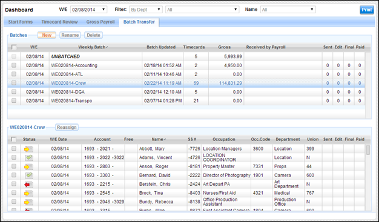
This dashboard contains the following sections:
Weekly Batch List
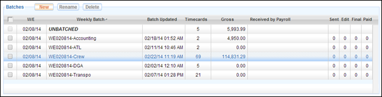
The Weekly Batch List contains the following fields:
· Selection Checkbox: Use this checkbox to select a batch to rename, delete, or transfer to a payroll service.
· W/E (Week Ending): The week ending for the batch.
· Weekly Batch Name: The name of the weekly batch of timecards. By default, the weekly batch name includes a prefix or suffix with the week ending date.
· Batch Updated: A timestamp showing when any timecard within the batch was last updated.
· Timecards: The number of timecards in the batch.
· Gross: The sum of the gross amounts of all timecards in the batch.
· Received by Payroll: If a batch of timecards was electronically transferred to a payroll service, this column displays the date and time when the batch was last received by the payroll service.
· Sent/Edit/Final/Paid: (For electronic transfer only) These columns display the status of each batch as its timecards proceed through each stage of being processed by the payroll service. Each column will display either the number of timecards to reach the stage or, if all timecards in the batch have reached the stage, a green checkmark. The stages are:
o Sent: The timecards were sent to the payroll service.
o Edit: An Edit Report was generated for the batch of timecards.
o Final: The final Edit Report has been prepared.
o Paid: Payroll checks have been issued for the timecards.
At the bottom of the dashboard is a list of timecards per batch. Click on a batch in the top list to view the timecards in the batch.
Batched Timecards List
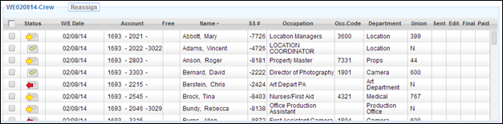
The Batched Timecards List contains the following fields:
· Selection Checkbox: Use this checkbox to select a timecard.
· Status: This column displays an icon indicating the status of the timecard. See the Timecard Status section for detailed descriptions of each status.
· W/E (Week Ending) Date: The week ending for the timecard.
· Account Code Columns: The Account Code for the timecard - Major, Detail, Set, and Free field.
· Name: The employee's name, last name first.
· SS#: The last four digits of the employee's Social Security number.
· Occupation: The employee's occupation.
· Occupation Code: The employee's occupation code, if applicable.
· Department: The employee's department.
·
· Sent/Edit/Final/Paid: (For electronic transfer only) These columns display the status of each timecard as it proceeds through each stage of being processed by the payroll service. Once a timecard reaches a stage, a green checkmark appears in the applicable column. The stages are:
o Sent: The timecard was sent to the payroll service.
o Edit: The timecard was included on the initial Edit Report.
o Final: The final Edit Report has been prepared.
o Paid: A payroll check has been issued for the timecard.
Select a batch via the left hand checkbox to activate the buttons above the weekly batch list. The buttons allow you to rename, delete or transfer the weekly batch.
Click on the New button above the weekly batch list. The following popup appears:
Create New Batch Popup
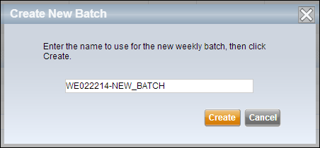
Select a batch using the left hand checkbox and click the Rename button. A popup window allows you to rename the batch.
Rename a Weekly Batch
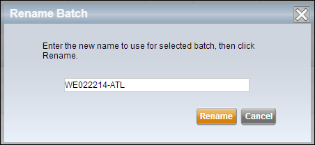
Select a batch using the left hand checkbox and click the Delete button. A popup window asks you to confirm the batch deletion.
Timecards from deleted batched are placed into a batch called Unbatched. This batch is always listed at the top of the weekly batch list.
Note: Once a batch has been transferred to a payroll service, it cannot be deleted.
Timecards from one batch may be moved to another batch. Move timecards to a batch using the Reassign button above the lower list of timecards.
1. Select one of more timecards using the checkboxes on the left.
2. Click the Reassign button.
3. Select a different weekly batch from the Reassign popup.
If you are using a payroll service which has integrated their payroll system with Lightspeed, you have the option of transmitting your timecards instantly to the payroll service using a secure web-based connection.
When transmitting your timecards electronically you can transmit one or more batches at a time, or you may transmit one or more individual timecards.
1. Using the selection checkboxes on the left, select one or more Weekly Batches, or one or more timecards.
2. Click the Transmit to Payroll button above either the Batch table or the timecards table.
The timecards are transmitted to the payroll service.
3. To check on the status of transmitted timecards, click the Check Payroll Status button above either the Batch table or the timecards table.
You can print a Batch Transfer Status Report using the Print button in the upper right corner of the dashboard.
Related Topics